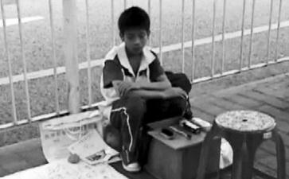

6月9日,广州三九脑科医院病房内,骆伟科正注视着病痛中沉睡的母亲。骆伟科已经学会了使用母亲病床边的医疗器械。父亲一年前脑溢血去世,母亲最近查出患脑肿瘤。
“我是家里唯一的男人,一定要救妈妈。”——13岁擦鞋男孩骆伟科
“我生出这个儿子,是我的福分啊!”——骆伟科的母亲
广州大道北的人行道上,一名身着校服、身躯瘦弱的男孩正埋头给人擦着皮鞋。地上摊着一张大大的求助信。求助信吸引了众多路人围观,一元的擦鞋费,有的人给20元,有人不擦鞋还给200元。
男孩名叫骆伟科,今年13岁,家住河源市龙川县车田镇坪塘村。爸爸一年前因脑溢血离世。母亲今年2月查出患有脑肿瘤,医疗费用超过几十万元。今年4月,男孩从老家步行340公里,历时一个多月,来到广州替人擦鞋,就是为了筹钱救助病重的母亲。
母亲查出患脑肿瘤由于家里经济不好,骆伟科曾被寄养在家住河源市的小姨家,而15岁的姐姐则与妈妈一起在外地做保姆谋生。
从今年2月起,51岁的母亲骆如娇在雇主家干活时,频频出现头晕、眼花等症状,并且只要一见亮光就会呕吐。雇主陈某曾两次带骆母前往当地医院就诊,最终确认脑部确有问题。但为避免骆母担心,陈某没告诉骆家实情,而是拿出了6000元现金,又额外补贴了1000元工资,劝其去大医院再次诊断。
3月,骆母两次来广州就医,最终确诊患有脑肿瘤,但终因几十万的医药费望而却步,只能返回龙川县的老家。姐姐根据村里人说的偏方,给妈妈上山采草药吃,终敌不过病情的恶化。妈妈的视力在一天天弱化、听力也慢慢减弱。想着重病的妈妈和昂贵的医药费,小骆焦急万分。
决定弃学赚钱救母自从爸爸去世后,家里只有妈妈和姐姐在赚钱,一个月1000多元的工资。而今妈妈病倒了,姐姐也回来照顾妈妈,家里顿时失去了生计来源,妈妈的医疗费又从何而来?
他做出了一个惊人的决定:不读书了,走到广州去擦皮鞋,赚钱救妈妈。
4月底的一天早晨,他趁小姨外出打工时决定离家出走,没带家里一分钱,没告诉家里任何人。穿着蓝白色校服和红色的布鞋,背上事先准备好的被子、水壶和自制的鞋框,沿着国道线一路南下朝着广州的方向进发。340多公里,开车只要3个多小时,他靠着自己的小脚走了足足30多天,他的心里只有一个信念:一定要让妈妈
小骆自造鞋框,出走时分文未带,一路上:饿了吃野果 渴了喝雨水
在长达一个月的出走时间里,小骆的去向几乎成了一个谜。他没带走家里一分钱,没告诉任何人自己的决定和去向。和他住在一起的小姨不知道他的去向,直到天黑也不见人影,短时间内,她焦急地哭着也不敢跟住在龙川县的姐姐汇报小骆不见了的事实。
“其实我早就准备好了。”小骆严肃地说。过去,他常和爸爸一起打
出走那天,早晨7点他便背起行囊离开了家。他懂得看路牌认方向,他知道只要沿国道线走就能到广州。假如走错路,就折回来走到上一个路牌,重新换方向走。
“家里条件不好,我出来是赚钱的,我没想过拿家里的钱。”小骆懂事地说。肚子饿了,他就摘路边的野果吃,也会储备几个在鞋框里;渴了就喝自来水、河水、雨水;困了就摊开被子在路边的草地上休息。他
他走破了红色布鞋的底,擦破了瘦小的胳膊留下了痂。他在一个又一个收费站问“这里是哪里”,直到最终听到对方回答他“这里是广州”,这已经到了5月底,距离他离开家已1个多月。
收入擦鞋3天赚到800元
“即使到了广州,我也没有觉得我的任务完成了。”坐在医生办公室里,小骆眉宇紧皱,双手交错一副纠结的样子,“要等到妈妈治完病,我的目标才算完成。”
小骆来到广州后,他向路边的一个陌生阿姨询问,“这里哪里人最多?”
“南方医院那一片吧!”陌生阿姨带他走了一个多小时,走到了医院对面的太阳城广场附近,他最终决定先在那里摆鞋摊。别人擦鞋2.5元,他擦鞋只要1元,尽管没想过要多久才能筹到几十万的医疗费,但他说,“这样肯定赚得比别人快。”
很快,13岁男孩擦鞋为母亲治病的消息迅速在大街上流传开来。围观的人越来越多,更有市民不为擦鞋直接为他捐款200元。
才来广州3天,小骆就收到了总共800多元的擦鞋费。近日,新加坡某慈善机构表示将主动筹款给骆母治病。6月8日,广东三九脑科医院也已前往小骆的老家龙川县,接骆母来院治疗。院方表示,骆母的前期检查费和救护车费已全免,总计5000多元。
治疗“能活多久,谁都不好说”
8日晚,院方接回骆母后迅速诊断,发现骆母右脑右侧长有一颗体积相当于一个鹅蛋大小的肿瘤,神经外五科主任、骆母未来手术的主刀医师鲁明在空中比划着。
医生从CT影片中发现,这颗肿瘤有60%—70%的可能为恶性肿瘤,但具体要通过手术才能判断。鲁明表示,“能活多久,谁都不好说。”
目前,骆母脑中的肿瘤生长速度非常快,肿瘤切除手术被安排在下周一进行。院方表示手术费将在4.5万元—5万元,而全部医疗费用将可能在10万—20万之间,具体要视病情而定。这对于一个月只有1000元收入的
儿要全力救母 母要儿子返学
“我是家里唯一的男人,一定要救妈妈。”在和小骆的交谈中,这句话小骆提到过很多次。
采访之余,小骆不停照料着妈妈,帮妈妈擦脸、陪妈妈说话,他偶尔凑到妈妈的耳边,说得最多的是“妈妈加油!”
骆母闭着的双眼里流出了眼泪,她微弱地说:“我生出我这个儿子,是我的福分啊!”但据小骆的小姨说,小骆已经好几个月没回学校了,“不知道学校是不是算他退学了。”“学要去上啊。”骆母拉着儿子的手,微弱地说。
昨日,骆伟科趴在手术室门玻璃上,目送妈妈进入手术室。骆妈妈躺在病床上等待进入手术室。医生称7—10天不出现并发症才算熬过难关
昨日下午,小骆的妈妈进行了脑瘤手术,手术持续了7个多小时,直到晚上8时多才结束。9点多被推回了病房。不过,小骆妈妈的术后检查到昨晚11时仍未结束。
术前,该院神经外科主任、骆母主刀医师鲁明表示:“这是个常规手术,但每个手术都有风险,压力也有。因为这个巨大肿瘤已侵害了重要的神经机构。我本着保全生命,保全大脑功能的目的,初步计划肿瘤不能全切。”
对于手术最危险的一环是术中会否出现大出血,及术后一周的手术反应,“术中只要不出现大出血就好。术后一周内尽量少出现一些并发症,比如脑功能障碍、脑水肿等,如果7-10天内不出现大的并发症,基本就算熬过来了。这样就只等术后苏醒、功能恢复了。”
由于骆母脑中的肿瘤属于胶质瘤,该院神经外科首席专家教授黄勤说,全世界胶质瘤病人平均